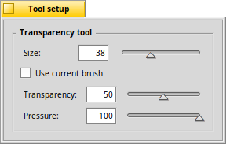

The Transparency tool - N
|  |
This tool changes the transparency of the touched pixels by applying the "alpha" value of the current foreground color. Say you have one image in layer 1 and another in layer 2 above it. If you set the transparency (=alpha) of the foreground color to 50% (the actual color doesn't matter), and start painting in layer 2, the touched pixels become max. 50% transparent and the image of layer 1 shines through. If you then set a color with alpha 100%, i.e. fully opaque, you can restore the original image when painting over the same areas you reduced the alpha values before. You can set the of your transparency brush. The quick key to choose the transparency tool is N. |
Back: The Text tool Next: The Eraser tool